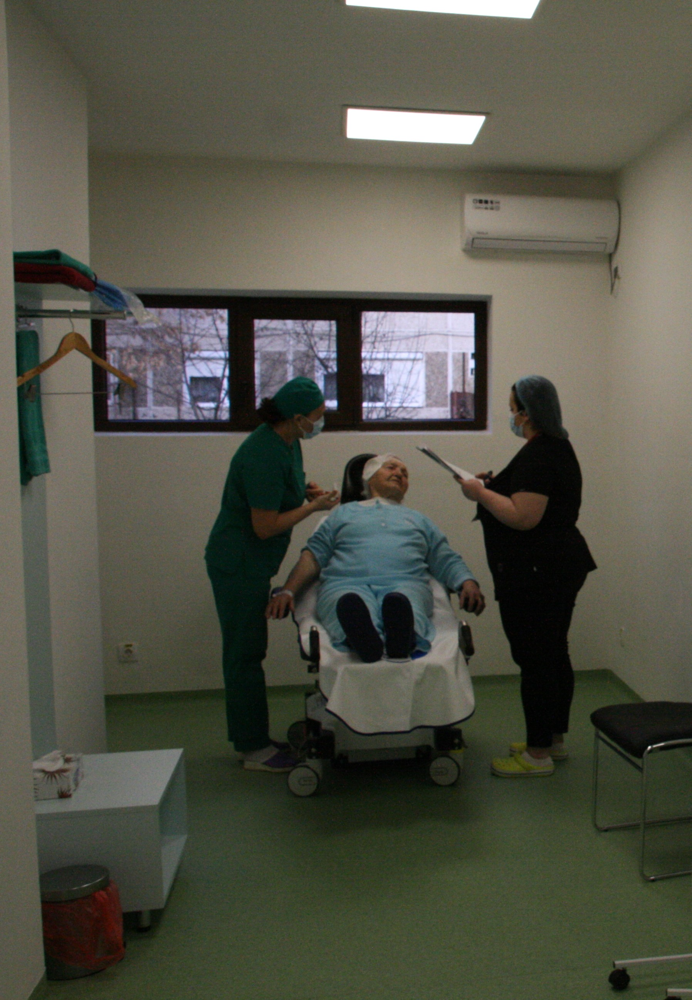

Chirurgia cataractei - pregătire, operație, recuperare
Ar trebui reținut că operația de cataractă nu se face cu anestezie generală, ci doar locală. În vederea bunei desfășurări a acesteia este nevoie să fie luate câteva precauții. Medicul chirurg, respectiv dr. Andrei Mureșan, trebuie să fie informat despre celelalte afecțiuni ale pacientului, despre medicamentele administrate în mod curent.
Doar Dr. Mureșan împreună cu anestezistul sunt în măsură să decidă dacă pacientul își va continua medicamentația, aceasta va fi înlocuită cu o alta sau va fi suspendată temporar.
Un interes deosebit îl reprezintă anticoagulantele care fac parte din medicamentația pacientului. În legătură cu acestea doar medicul poate lua o decizie. Pentru ca operația de cataractă să se desfășoare în bune condiții, pacientul va trebui să aducă un set de analize și investigații medicale. Echipei medicale de la ARTVISION MED trebuie să-i fie aduse la cunoștință:
- analize de sânge recente, respectiv hemoleucograma, glicemia și coagulograma;
- un EKG nu mai vechi de o lună și, după caz, rezultatele unei consultații efectuate de un cardiolog, respectiv recomandarea de intervenție chirurgicală;
Prevenirea infecțiilor. Alimentația din ziua intervenției chirurgicale
Așa cum am spus mai sus, tratamentul medicamentos destinat altor afecțiuni va trebui urmat și eventual corectat în funcție de discuția cu membrii echipei operatorii. În preziua operației se face o pregătire simplă prin administrare de picături.
Rețineți că și după operație va trebui să continuați un tratament, tot sub formă de picături. Astfel se asigura o recuperare și o vindecare medicală rapidă și confortabilă.
În ceea ce privește alimentația, cu cel puțin două ore înainte de intervenție vă rugăm să nu consumați nimic. Excepție fac doar acele medicamente despre care ați discutat cu echipa operatorie. De asemenea, să nu consumați lichide sau alimente înainte de operația de cataractă. O masă ușoară poate fi servită cu 4-5 ore înainte.
Operația de cataractă propriu-zisă
Operația efectivă de cataractă se va desfășura în locația de pe strada Gheorghe Ranetti nr 60 din Timișoara. Încă de la sosire veți fi preluați de personalul nostru și veți beneficia de cele mai atente și profesioniste pregătiri pentru operație.

După operație veți putea pleca acasă de îndată, de preferat cu ajutorul unui însoțitor. Ochiul operat va fi pansat așa că nu veți putea conduce autovehicule! O operație de cataractă la ARTVISION MED Timișoara nu durează mai mult de 15-20 minute. Cel mai cronofag este procesul de pregătire al acesteia: sterilizarea, anestezierea.

În timpul operației pacientul este conștient și nu simte nicio durere. Operația în sine constă, pe scurt, din câteva etape. Cele mai importante sunt:
- incizia la nivelul corneei, aceasta are dimensiunea de 2.4 mm
- facoemulsificarea care înseamnă de fapt fragmentarea vechiului cristalin pentru a putea fi aspirat
- introducerea implantului de cristalin
Amatorii de detalii sunt invitați să urmărească o animație despre operația de cataractă în materialul de mai jos.
Sistemul Centurion Active Sentry – Alcon cu care este dotată sala de operații este de un real folos medicului chirurg. Pentru ca operația de cataractă să se desfășoare în cele mai bune condiții, un sistem computerizat pune la dispoziție și controlează absolut orice detaliu.
Astfel, dr Mureșan are sub control întregul proces. De la presiunea fluidelor, tensiunea intraoculară și până la pulsul pacientului.
Sfârșitul operației. Recuperarea
Am putea spune că sfârșitul suferă de oarecare banalitate. Veți spune poate ce mare lucru este și operația asta de cataractă!? Un computer, niște scule de mare precizie și cursuri de instruire. Apoi, la sfârșit, un pansament peste ochi și gata. Lucrurile nu sunt însă chiar atât de simple. Este totuși o intervenție chirurgicală, una de mare precizie, pentru care pregătirea medicală durează ani de zile.

Sunteți invitați ca în următoarele zile să nu faceți eforturi fizice mari. De exemplu să ridicați greutăți mai mari de 3-4 kg. Să nu mergeți la cumpărături la supermarket așa cum erați obișnuiți. Până vă recuperați complet. Raportați medicului orice evoluție a stării postoperatorii.
Operația de cataractă beneficiază de o rată a succesului deosebit de mare. La nivel statistic, peste 95% din operații nu au nicio complicație iar pacienții au vederea sensibil îmbunătățită.